深入理解JAVA虚拟机笔记

本文主要整理由周志明编写的《深入理解Java虚拟机》第三版书籍的整理笔记。
第二章 Java内存区域与内存溢出异常
运行时数据区域：
- 程序计数器：通过改变其值来获取下一条需要执行的字节码指令。
- 虚拟机栈：每个方法执行的时候会创建一个栈帧，用于存储局部变量，方法出口等信息。
- 本地方法栈：同虚拟机栈，只不过本地方法栈是为本地方法服务的。
- 堆：几乎所有的对象实例都会在这里面分配。
- 方法区：用于存储已被虚拟机加载的类型信息、常量、静态变量、即时编译器编译后的代码缓存等数据。
- 运行时常量池：是方法区的一部分，常量池表，Class文件中描述信息会放在此处。
直接内存：在JDK 1.4中新加入了NIO（New Input/Output）类，引入了一种基于通道（Channel）与缓冲区（Buffer）的I/O方式，它可以使用Native函数库直接分配堆外内存，然后通过一个存储在Java堆里面的DirectByteBuffer对象作为这块内存的引用进行操作。
对象的创建：当Java虚拟机遇到一条字节码new指令时，首先将去检查这个指令的参数是否能在常量池中定位到一个类的符号引用，并且检查这个符号引用代表的类是否已被加载、解析和初始化过。如果没有，那必须先执行相应的类加载过程。在类加载检查通过后，接下来虚拟机将为新生对象分配内存。分配方式有指针碰撞和空闲列表两种方式。接下来，就需要执行构造函数了，也就是Class文件中的<init>()方法。
对象的内存布局：对象在堆里面的内存布局分为三部分：对象头，实例数据，对齐填充
- 对象头：第一类用于存储对象自身的运行时数据，如哈希码，GC分代年龄等，第二部分是类型指针，用于确定该对象是那个类的实例。
- 实例数据：从父类继承和该类中定义的数据。
- 对齐填充：用于保证对象是8字节对齐的。
对象的访问定位：主流的方式有两种，使用句柄或者使用直接指针，HotSpot虚拟机使用直接指针方式。
句柄：好处就是reference中存储的是稳定句柄地址，在对象被移动（垃圾收集时移动对象是非常普遍的行为）时只会改变句柄中的实例数据指针，而referrence不用修改
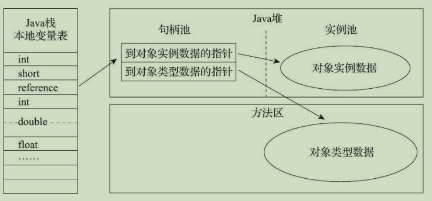image-20201112195734391直接指针：好处就是速度更快，它节省了一次指针定位的时间开销
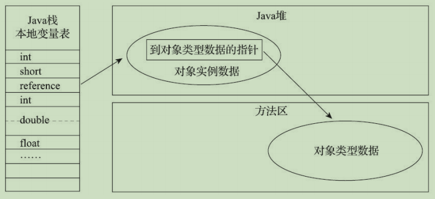image-20201112195807566
第三章 垃圾收集器与内存分配策略
引用计数算法：在对象中添加一个引用计数器，每当有一个地方引用它时，计数器值就加一；当引用失效时，计数器值就减一；任何时刻计数器为零的对象就是不可能再被使用的。该方法不能检测循环引用。
可达性分析算法：基本思路就是通过一系列称为“GC Roots”的根对象作为起始节点集，从这些节点开始，根据引用关系向下搜索，搜索过程所走过的路径称为“引用链”（Reference Chain），如果某个对象到GC Roots间没有任何引用链相连，或者用图论的话来说就是从GC Roots到这个对象不可达时，则证明此对象是不可能再被使用的。在Java技术体系中，GC Roots对象有：
- 虚拟机栈中引用的对象
- 在方法区中类静态属性引用的对象，常量引用的对象
- 同步锁持有的对象
引用类型：在JDK 1.2版之后，Java对引用的概念进行了扩充，有以下几类
- 强引用：最传统的“引用”的定义，是指在程序代码之中普遍存在的引用赋值
- 软引用：来描述一些还有用，但非必须的对象。只被软引用关联着的对象，在系统将要发生内存溢出异常前，会把这些对象列进回收范围之中进行第二次回收
- 弱引用：也是用来描述那些非必须对象，但是它的强度比软引用更弱一些，被弱引用关联的对象只能生存到下一次垃圾收集发生为止
- 虚引用：最弱的一种引用关系，一个对象是否有虚引用的存在，完全不会对其生存时间构成影响，也无法通过虚引用来取得一个对象实例，为一个对象设置虚引用关联的唯一目的只是为了能在这个对象被收集器回收时收到一个系统通知
对象自我拯救：即使在可达性分析算法中判定为不可达的对象，这时候它们暂时还处于“缓刑”阶段，要真正宣告一个对象死亡，至少要经历两次标记过程：如果对象在进行可达性分析后发现没有与GC Roots相连接的引用链，那它将会被第一次标记，随后进行一次筛选，筛选的条件是此对象是否有必要执行finalize()方法。假如对象没有覆盖finalize()方法，或者finalize()方法已经被虚拟机调用过，那么虚拟机将这两种情况都视为“没有必要执行”。如果这个对象被判定为确有必要执行finalize()方法，那么该对象将会被放置在一个名为F-Queue的队列之中，并在稍后由一条由虚拟机自动建立的、低调度优先级的Finalizer线程去执行它们的finalize()方法。finalize()方法是对象逃脱死亡命运的最后一次机会，稍后收集器将对F-Queue中的对象进行第二次小规模的标记，如果对象要在finalize()中成功拯救自己，即只要重新与引用链上的任何一个对象建立关联即可，譬如把自己（this关键字）赋值给某个类变量或者对象的成员变量，那在第二次标记时它将被移出“即将回收”的集合。
回收方法区：在Java堆中，尤其是在新生代中，对常规应用进行一次垃圾收集通常可以回收70%至99%的内存空间，相比之下，方法区回收囿于苛刻的判定条件，其区域垃圾收集的回收成果往往远低于此。方法区的垃圾收集主要回收两部分内容：废弃的常量和不再使用的类型。
分代收集理论：建立在三个假说之上：
- 弱分代假说：绝大多数对象都是朝生夕灭的。
- 强分代假说：熬过越多次垃圾收集过程的对象就越难以消亡。
- 跨代引用假说：跨代引用相对于同代引用来说仅占极少数。
前两个假说表明如果一个区域中大多数对象都是朝生夕灭，难以熬过垃圾收集过程的话，那么把它们集中放在一起，每次回收时只关注如何保留少量存活而不是去标记那些大量将要被回收的对象，就能以较低代价回收到大量的空间；如果剩下的都是难以消亡的对象，那把它们集中放在一块，虚拟机便可以使用较低的频率来回收这个区域，这就同时兼顾了垃圾收集的时间开销和内存的空间有效利用；第三点表明我们就不应再为了少量的跨代引用去扫描整个老年代，也不必浪费空间专门记录每一个对象是否存在及存在哪些跨代引用。
标记-清除算法：首先标记出所有需要回收的对象，在标记完成后，统一回收掉所有被标记的对象。缺点：第一个是执行效率不稳定，如果Java堆中包含大量对象，而且其中大部分是需要被回收的，这时必须进行大量标记和清除的动作，导致标记和清除两个过程的执行效率都随对象数量增长而降低；第二个是内存空间的碎片化问题，标记、清除之后会产生大量不连续的内存碎片，空间碎片太多可能会导致当以后在程序运行过程中需要分配较大对象时无法找到足够的连续内存而不得不提前触发另一次垃圾收集动作。
标记-复制算法：将可用内存按容量划分为大小相等的两块，每次只使用其中的一块。当这一块的内存用完了，就将还存活着的对象复制到另外一块上面，然后再把已使用过的内存空间一次清理掉。如果内存中多数对象都是存活的，这种算法将会产生大量的内存间复制的开销，但对于多数对象都是可回收的情况，算法需要复制的就是占少数的存活对象，而且每次都是针对整个半区进行内存回收，分配内存时也就不用考虑有空间碎片的复杂情况，只要移动堆顶指针，按顺序分配即可。这样实现简单，运行高效，不过其缺陷也显而易见，这种复制回收算法的代价是将可用内存缩小为了原来的一半，空间浪费未免太多了一点。
新生代存在朝生夕灭现象，存活者大概只有 10% 左右，内存空间比可以分为 8 ：1
标记-整理算法：其中的标记过程仍然与“标记-清除”算法一样，但后续步骤不是直接对可回收对象进行清理，而是让所有存活的对象都向内存空间一端移动，然后直接清理掉边界以外的内存。标记-清除算法与标记-整理算法的本质差异在于前者是一种非移动式的回收算法，而后者是移动式的。是否移动回收后的存活对象是一项优缺点并存的风险决策：在老年代这种每次回收都有大量对象存活区域，移动存活对象并更新所有引用这些对象的地方将会是一种极为负重的操作，而且这种对象移动操作必须全程暂停用户应用程序才能进行；而不移动对象的时候又存在空间碎片化问题。
经典垃圾收集器：
Serial 收集器：是一个单线程工作的收集器，但它的“单线程”的意义并不仅仅是说明它只会使用一个处理器或一条收集线程去完成垃圾收集工作，更重要的是强调在它进行垃圾收集时，必须暂停其他所有工作线程，直到它收集结束。优点是简单，内存消耗低；缺点是需要暂停其他工作线程。
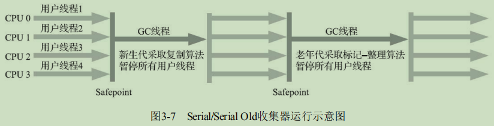image-20201127193322965ParNew 收集器：实质上是Serial收集器的多线程并行版本。
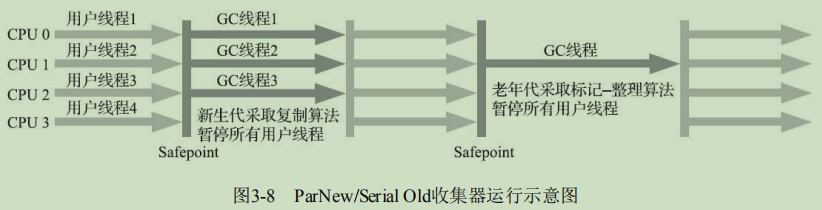image-20201127193714941Parallel Scavenge收集器：也是一款新生代收集器，它同样是基于标记-复制算法实现的收集器，也是能够并行收集的多线程收集器，它的特点在于它的关注点与其他收集器不同，CMS等收集器的关注点是尽可能地缩短垃圾收集时用户线程的停顿时间，而Parallel Scavenge收集器的目标则是达到一个可控制的吞吐量。
Serial Old收集器：Serial收集器的老年代版本，它同样是一个单线程收集器，使用标记-整理算法。
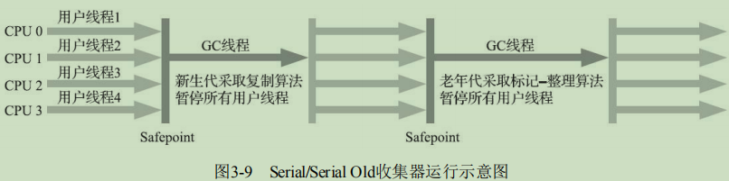image-20201127194020758Parallel Old收集器：是Parallel Scavenge收集器的老年代版本，支持多线程并发收集，基于标记-整理算法实现。吞吐量优先收集器。
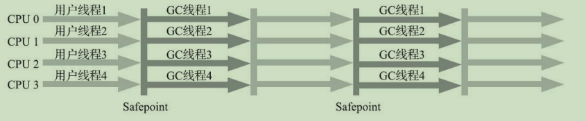image-20201127194122503CMS（Concurrent Mark Sweep）收集器：是一种以获取最短回收停顿时间为目标的收集器。很大一部分Java应用基于 B/S 实现，这类应用通常都会较为关注服务的响应速度，希望系统停顿时间尽可能短，以给用户带来良好的交互体验。CMS收集器就非常符合这类应用的需求。收集过程如下：
- 初始标记：记仅仅只是标记一下GC Roots能直接关联到的对象，速度很快；Stop the World
- 并发标记：是从GC Roots的直接关联对象开始遍历整个对象图的过程，这个过程耗时较长但是不需要停顿用户线程，可以与垃圾收集线程一起并发运行；
- 重新标记：则是为了修正并发标记期间，因用户程序继续运作而导致标记产生变动的那一部分对象的标记记录；Stop the World
- 并发清除：清理删除掉标记阶段判断的已经死亡的对象，由于不需要移动存活对象，所以这个阶段也是可以与用户线程同时并发的。
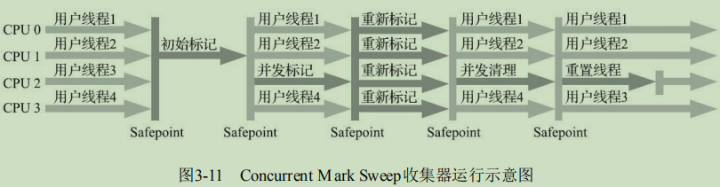image-20201127194644675优点：并发收集，低停顿；缺点：对处理器资源敏感（并发阶段会导致应用程序变慢，降低总吞吐量），无法处理“浮动垃圾”（并发清理阶段，用户线程是还在继续运行的，程序在运行自然就还会伴随有新的垃圾对象不断产生），基于标记清除，空间碎片化问题严重。
Garbage First收集器：简称 G1 收集器，在G1收集器出现之前的所有其他收集器，包括CMS在内，垃圾收集的目标范围要么是整个新生代（Minor GC），要么就是整个老年代（Major GC），再要么就是整个Java堆（Full GC）。而G1跳出了这个樊笼，它可以面向堆内存任何部分来组成回收集（Collection Set，一般简称CSet）进行回收，衡量标准不再是它属于哪个分代，而是哪块内存中存放的垃圾数量最多，回收收益最大，这就是G1收集器的Mixed GC模式。G1不再坚持固定大小以及固定数量的分代区域划分，而是把连续的Java堆划分为多个大小相等的独立区域（Region），每一个Region都可以根据需要，扮演新生代的Eden空间、Survivor空间，或者老年代空间。收集器能够对扮演不同角色的Region采用不同的策略去处理，从而获取更好的收集效果。G1收集器过程：
- 初始标记：仅仅只是标记一下GC Roots能直接关联到的对象，需要短暂停顿
- 并发标记：从GC Root开始对堆中对象进行可达性分析，递归扫描整个堆里的对象图，找出要回收的对象，这阶段耗时较长，但可与用户程序并发执行。
- 最终标记：对用户线程做另一个短暂的暂停，用于处理并发阶段结束后仍遗留下来的最后那少量的SATB记录。
- 筛选回收：负责更新Region的统计数据，对各个Region的回收价值和成本进行排序，根据用户所期望的停顿时间来制定回收计划，可以自由选择任意多个Region构成回收集，然后把决定回收的那一部分Region的存活对象复制到空的Region中，再清理掉整个旧Region的全部空间。这里的操作涉及存活对象的移动，是必须暂停用户线程，由多条收集器线程并行完成的。
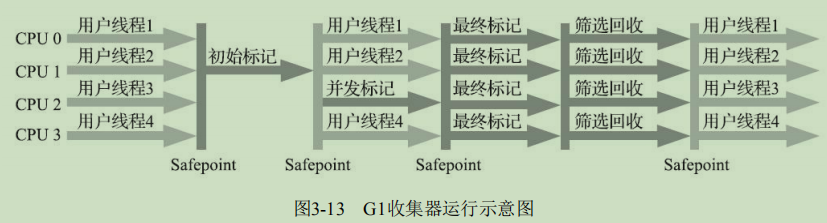image-20201127201915199
低延迟垃圾收集器：HotSpot的垃圾收集器从Serial发展到CMS再到G1，经历了逾二十年时间，经过了数百上千万台服务器上的应用实践，已经被淬炼得相当成熟了，不过它们距离“完美”还是很遥远。衡量垃圾收集器的三项最重要的指标是：内存占用（Footprint）、吞吐量（Throughput）和延迟（Latency），三者共同构成了一个“不可能三角”。图3-14中浅色阶段表示必须挂起用户线程，深色表示收集器线程与用户线程是并发工作的。
Shenandoah收集器：Shenandoah作为第一款不由Oracle（包括以前的Sun）公司的虚拟机团队所领导开发的HotSpot垃圾收集器，不可避免地会受到一些来自“官方”的排挤。Shenandoah反而更像是G1的下一代继承者，它们两者有着相似的堆内存布局，在初始标记、并发标记等许多阶段的处理思路上都高度一致，甚至还直接共享了一部分实现代码。虽然Shenandoah也是使用基于Region的堆内存布局，同样有着用于存放大对象的Humongous Region，默认的回收策略也同样是优先处理回收价值最大的Region……但在管理堆内存方面，它与G1至少有三个明显的不同之处，最重要的当然是支持并发的整理算法，G1的回收阶段是可以多线程并行的，但却不能与用户线程并发；其次，Shenandoah（目前）是默认不使用分代收集的；Shenandoah摒弃了在G1中耗费大量内存和计算资源去维护的记忆集，改用名为“连接矩阵”（Connection Matrix）的全局数据结构来记录跨Region的引用关系，降低了处理跨代指针时的记忆集维护消耗。大致上可以分为九个阶段：初始标记，并发标记，最终标记，并发清理，并发回收，初始引用更新，最终引用更新，并发清理。
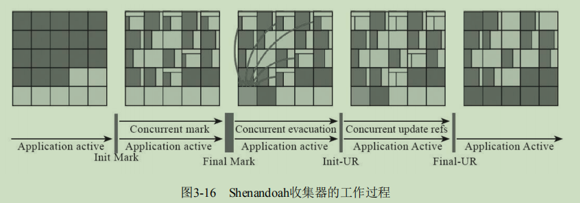image-20201127203047510最重要三个阶段是并发标记、并发回收、并发引用更新。
ZCG收集器：Z Garbage Collector，是由Oracle公司研发的。ZGC和Shenandoah的目标是高度相似的，都希望在尽可能对吞吐量影响不太大的前提下[2]，实现在任意堆内存大小下都可以把垃圾收集的停顿时间限制在十毫秒以内的低延迟。ZGC也采用基于Region的堆内存布局，但与它们不同的是，ZGC的Region（在一些官方资料中将它称为Page或者ZPage，本章为行文一致继续称为Region）具有动态性——动态创建和销毁，以及动态的区域容量大小。Shenandoah使用转发指针和读屏障来实现并发整理，ZGC虽然同样用到了读屏障，但用的却是一条与Shenandoah完全不同，更加复杂精巧的解题思路：染色指针技术。分为四个阶段：并发标记，并发预备重分配，并发重分配，并发重映射。
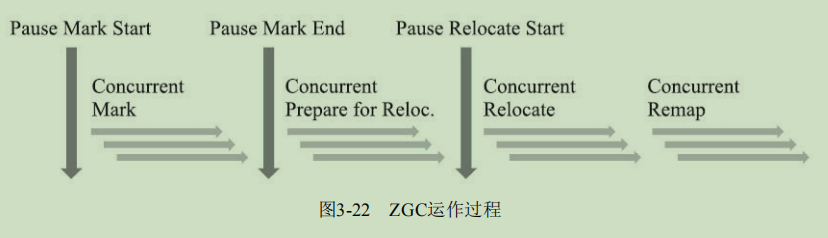image-20201127203846223
Epsilon收集器：这是一款以不能够进行垃圾收集为“卖点”的垃圾收集器，要负责堆的管理与布局、对象的分配、与解释器的协作、与编译器的协作、与监控子系统协作等职责，其中至少堆的管理和对象的分配这部分功能是Java虚拟机能够正常运作的必要支持，是一个最小化功能的垃圾收集器也必须实现的内容。对弈比较小的应用有用武之地。
第四章 虚拟机性能监控、故障处理工具
基础故障处理工具：
- jps：虚拟机进程状况工具，可以列出正在运行的虚拟机进程，并显示虚拟机执行主类（Main Class，main()函数所在的类）名称以及这些进程的本地虚拟机唯一ID（LVMID，Local Virtual Machine Identifier）。
- jstat（JVM Statistics Monitoring Tool）：用于监视虚拟机各种运行状态信息的命令行工具，可以显示本地或者远程[1]虚拟机进程中的类加载、内存、垃圾收集、即时编译等运行时数据。
- jinfo（Configuration Info for Java）：实时查看和调整虚拟机各项参数。
- jmap（Memory Map for Java）：用于生成堆转储快照（一般称为heapdump或dump文件）。
- jhat（JVM Heap Analysis Tool）：与jmap搭配使用，来分析jmap生成的堆转储快照。
- jstack（Stack Trace for Java）：用于生成虚拟机当前时刻的线程快照（一般称为threaddump或者 javacore文件），线程快照就是当前虚拟机内每一条线程正在执行的方法堆栈的集合，生成线程快照的目的通常是定位线程出现长时间停顿的原因，如线程间死锁、死循环。
可视化故障处理工具：
- JHSDB：基于服务性代理的调试工具
- JConsole：Java监视与管理控制台
- VisualVM：多合-故障处理工具，是功能最强大的运行监视和故障处理程序之一
- JMC（Java Mission Control）：可持续在线的监控工具
第六章 类文件结构
平台无关性：字节码(Byte Code)文件是构成平台无关性的基石，Java 虚拟机只接受字节码文件，而不管这些文件是怎么的得到的，这就为其他语言可以运行在 Java 虚拟机上提供了基础。
Class类文件的结构：
Class文件是一组以8个字节为基础单位的二进制流，并且按照 Big-Endian 来排列位数较大的数。
Class文件采用一种类似C语言的言结构体的伪结构来存储数据，这种伪结构中只有两种数据类型：“无符号数”和“表”。
无符号数属于基本的数据类型，以u1、u2、u4、u8来分别代表1个字节、2个字节、4个字节和8个
字节的无符号数，无符号数可以用来描述数字、索引引用、数量值或者按照UTF-8编码构成字符串
值。表是由多个无符号数或者其他表作为数据项构成的复合数据类型，为了便于区分，所有表的命名
都习惯性地以“_info”结尾。整个Class文件本质上也可以视作是一张表：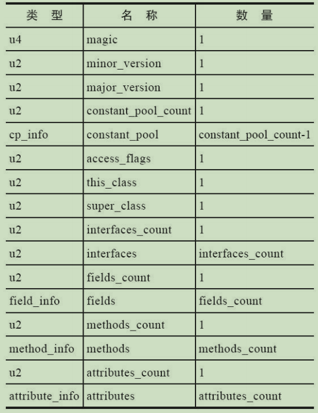image-20201128230232765无论是无符号数还是表，当需要描述同一类型但数量不定的多个数据时，经常会使用一个前置的容量计数器加若干个连续的数据项的形式，这时候称这一系列连续的某一类型的数据为某一类型的“集合”。
魔数：每个Class文件的头4个字节被称为魔数（Magic Number），它的唯一作用是确定这个文件是否为一个能被虚拟机接受的Class文件。文件格式的制定者可以自由地选择魔数值，只要这个魔数值还没有被广泛采用过而且不会引起混淆。Class文件的魔数取得很有“浪漫气息”，值为0xCAFEBABE（咖啡宝贝？）。
Class 文件的版本：第5和第6个字节是次版本号（Minor Version），第7和第8个字节是主版本号（Major Version）。
常量池：常量池可以比喻为Class文件里的资源仓库，它是Class文件结构中与其他项目关联最多的数据，通常也是占用Class文件空间最大的数据项目之一。由于常量池中常量的数量是不固定的，所以在常量池的入口需要放置一项u2类型的数据，代表常量池容量计数值（constant_pool_count）。与Java中语言习惯不同，这个容量计数是从1而不是0开始的。这样做的目的在于，如果后面某些指向常量池的索引值的数据在特定情况下需要表达“不引用任何一个常量池项目”的含义，可以把索引值设置为0来表示。常量池中主要存放两大类常量：字面量（Literal）和符号引用（Symbolic References）。常量池中每一项常量都是一个表，截至JDK13，常量表中分别有17种不同类型的常量。这17类表都有一个共同的特点，表结构起始的第一位是个u1类型的标志位（tag，取值见表6-3中标志列），代表着当前常量属于哪种常量类型。17种常量类型：
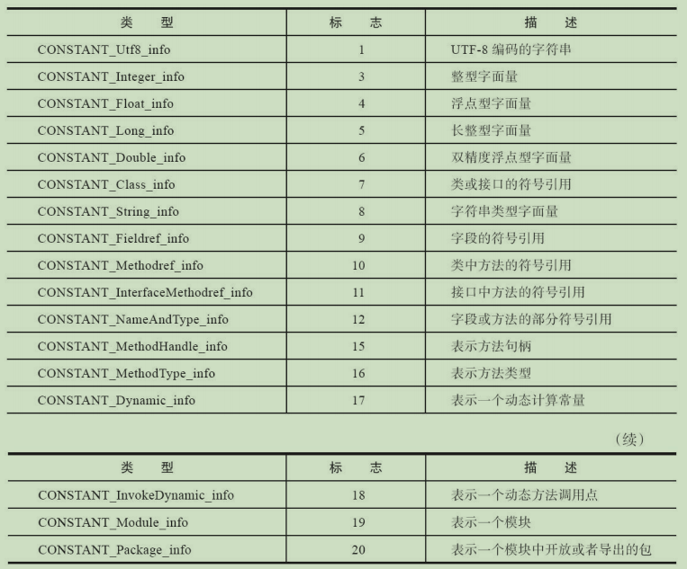image-20201128235404018访问标志：用于识别一些类或者接口层次的访问信息，包括：这个Class是类还是接口；是否定义为public类型；是否定义为abstract类型；如果是类的话，是否被声明为final；
image-20201129000121788
类索引、父类索引与接口索引集合：类索引（this_class）和父类索引（super_class）都是一个u2类型的数据，而接口索引集合（interfaces）是一组u2类型的数据的集合，Class文件中由这三项数据来确定该类型的继承关系。
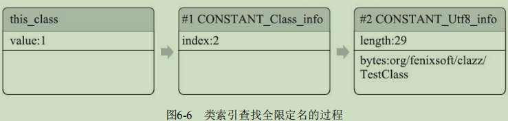image-20201129091647440字段表集合：字段表（field_info）用于描述接口或者类中声明的变量。
image-20201129091933843
字段修饰符放在access_flags项目中，跟随access_flags标志的是两项索引值：name_index descriptor_index。它们都是对常量池项的引用，分别代表着字段的简单名称以及字段和方法的描述符。
方法表集合：Class文件存储格式中对方法的描述与对字段的描述采用了几乎完全一致的方式，方法表的结构如同字段表一样，依次包括访问标志（access_flags）、名称索引（name_index）、描述符索引（descriptor_index）、属性表集合（attributes）几项，如表6-11所示。
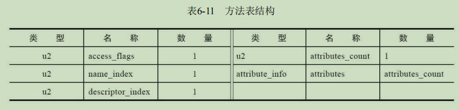image-20201129092210757属性表集合：属性表（attribute_info）在前面的讲解之中已经出现过数次，Class文件、字段表、方法表都可以携带自己的属性表集合，以描述某些场景专有的信息。部分属性表如下：
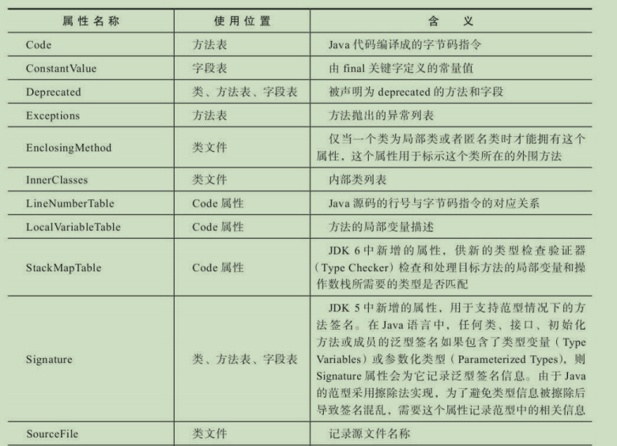image-20201129092437699对于每一个属性，它的名称都要从常量池中引用一个CONSTANT_Utf8_info类型的常量来表示，而属性值的结构则是完全自定义的，只需要通过一个u4的长度属性去说明属性值所占用的位数即可。
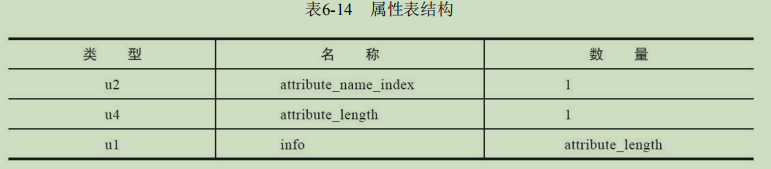image-20201129092513520
字节码指令简介：由于Java虚拟机采用面向操作数栈而不是面向寄存器的架构，所以大多数指令都不包含操作数，只有一个操作码（一个字节），指令参数都存放在操作数栈中。由于Class文件格式放弃了编译后代码的操作数长度对齐，这就意味着虚拟机在处理那些超过一个字节的数据时，不得不在运行时从字节中重建出具体数据的结构；放弃了操作数长度对齐，就意味着可以省略掉大量的填充和间隔符号；用一个字节来代表操作码，也是为了尽可能获得短小精干的编译代码。
- 字节码和数据类型：大多数指令都包含其操作所对应的数据类型信息，如iload，fload。大部分指令都没有支持整数类型byte、char和short，甚至没有任何指令支持boolean类型。编译器会在编译期或运行期将byte和short类型的数据带符号扩展（Sign-Extend）为相应的int类型数据，将boolean和char类型数据零位扩展（Zero-Extend）为相应的int类型数据。
- 加载和存储指令：
iload、iload_<n>、，istore、istore_<n>等 - 运算指令：算术指令用于对两个操作数栈上的值进行某种特定运算，并把结果重新存入到操作栈顶。分为两种：对整型数据进行运算的指令与对浮点型数据进行运算的指令。换句话说是不存在直接支持byte、short、char和boolean类型的算术指令，对于上述几种数据的运算，应使用操作int类型的指令代替。指令有：
iadd、ladd、fadd、dadd等。Java虚拟机在进行浮点数运算时，所有的运算结果都必须舍入到适当的精度，非精确的结果必须舍入为可被表示的最接近的精确值；如果有两种可表示的形式与该值一样接近，那将优先选择最低有效位为零的；而在把浮点数转换为整数时，Java虚拟机使用IEEE 754标准中的向零舍入模式，这种模式的舍入结果会导致数字被截断，所有小数部分的有效字节都会被丢弃掉。 - 类型转换指令：Java虚拟机直接支持（即转换时无须显式的转换指令）宽化类型转换（即小范围类型向大范围类型的安全转换），处理窄化类型转换（Narrowing Numeric Conversion）时，就必须显式地使用转换指令来完成，这些转换指令包括i2b、i2c、i2s、l2i、f2i、f2l、d2i、d2l和d2f。在将int或long类型窄化转换为整数类型T的时候，转换过程仅仅是简单丢弃除最低位N字节以外的内容，N是类型T的数据类型长度，这将可能导致转换结果与输入值有不同的正负号。
- 对象创建和访问指令：对象创建后，就可以通过对象访问指令获取对象实例或者数组实例中的字段或者数组元素，这些指令包括：
- 创建类实例的指令：new
- 创建数组的指令：newarray、anewarray、multianewarray
- 访问类字段（static字段，或者称为类变量）和实例字段（非static字段，或者称为实例变量）的指令：getfield、putfield、getstatic、putstatic
- 把一个数组元素加载到操作数栈的指令：baload、caload、saload、iaload、laload、faload、daload、aaload
- 将一个操作数栈的值储存到数组元素中的指令：bastore、castore、sastore、iastore、fastore、dastore、aastore
- 取数组长度的指令：arraylength
- 检查类实例类型的指令：instanceof、checkcast
- 操作数栈管理指令：
pop，dup，swap等 - 控制转移指令：
ifeq，ret，if_icmpeq等 - 方法调用和返回指令：
- invokevirtual指令：用于调用对象的实例方法，根据对象的实际类型进行分派（虚方法分派），这也是Java语言中最常见的方法分派方式。
- invokeinterface指令：用于调用接口方法，它会在运行时搜索一个实现了这个接口方法的对象，找出适合的方法进行调用。
- invokespecial指令：用于调用一些需要特殊处理的实例方法，包括实例初始化方法、私有方法和父类方法。
- invokestatic指令：用于调用类静态方法（static方法）。
- invokedynamic指令：用于在运行时动态解析出调用点限定符所引用的方法。并执行该方法。前面四条调用指令的分派逻辑都固化在Java虚拟机内部，用户无法改变，而invokedynamic指令的分派逻辑是由用户所设定的引导方法决定的。
- 异常处理指令：在Java程序中显式抛出异常的操作（throw语句）都由athrow指令来实现。
- 同步指令：Java虚拟机可以支持方法级的同步和方法内部一段指令序列的同步，这两种同步结构都是使用管程（Monitor，更常见的是直接将它称为“锁”）来实现的。当方法调用时，调用指令将会检查方法的ACC_SYNCHRONIZED访问标志是否被设置，如果设置了，执行线程就要求先成功持有管程，然后才能执行方法，最后当方法完成（无论是正常完成还是非正常完成）时释放管程。同步一段指令集序列通常是由Java语言中的synchronized语句块来表示的，Java虚拟机的指令集中有monitorenter和monitorexit两条指令来支持synchronized关键字的语义。
公有设计，私有实现：《Java虚拟机规范》描绘了Java虚拟机应有的共同程序存储格式：Class文件格式以及字节码指令集。但一个优秀的虚拟机实现，在满足《Java虚拟机规范》的约束下对具体实现做出修改和优化也是完全可行的。虚拟机实现的方式主要有以下两种：
- 将输入的Java虚拟机代码在加载时或执行时翻译成另一种虚拟机的指令集；
- 将输入的Java虚拟机代码在加载时或执行时翻译成宿主机处理程序的本地指令集（即即时编译器代码生成技术）
Class文件结构的发展：相对于语言、API以及Java技术体系中其他方面的变化，Class文件结构一直处于一个相对比较稳定的状态，Class文件的主体结构、字节码指令的语义和数量几乎没有出现过变动，所有对Class文件格式的改进，都集中在访问标志、属性表这些设计上原本就是可扩展的数据结构中添加新内容。
第七章 虚拟机类加载机制
概述：Java虚拟机把描述类的数据从Class文件加载到内存，并对数据进行校验、转换解析和初始化，最终形成可以被虚拟机直接使用的Java类型，这个过程被称作虚拟机的类加载机制。与那些在编译时需要进行连接的语言不同，在Java语言里面，类型的加载、连接和初始化过程都是在程序运行期间完成的，这种策略让Java语言进行提前编译会面临额外的困难，也会让类加载时稍微增加一些性能开销，但是却为Java应用提供了极高的扩展性和灵活性。
类加载的时机：一个类的整个生命周期如下：
加载、验证、准备、初始化和卸载这五个阶段的顺序是确定的，而解析阶段则不一定：它在某些情况下可以在初始化阶段之后再开始，这是为了支持Java语言的运行时绑定特性（也称为动态绑定或晚期绑定）。但是对于初始化阶段，《Java虚拟机规范》则是严格规定了有且只有六种情况必须立即对类进行“初始化”（而加载、验证、准备自然需要在此之前开始）：
- 遇到new、getstatic、putstatic或invokestatic这四条字节码指令时，如果类型没有进行过初始化，则需要先触发其初始化阶段。如使用new关键字，读取或设置一个类的静态字段，调用一个类的静态方法。
- 使用java.lang.reflect包的方法对类型进行反射调用的时候，如果类型没有进行过初始化，则需要先触发其初始化。
- 当初始化类的时候，如果发现其父类还没有进行过初始化，则需要先触发其父类的初始化。
- 当虚拟机启动时，用户需要指定一个要执行的主类（包含main()方法的那个类），虚拟机会先初始化这个主类。
- 如果一个java.lang.invoke.MethodHandle实例最后的解析结果为REF_getStatic、REF_putStatic、REF_invokeStatic、REF_newInvokeSpecial四种类型的方法句柄，并且这个方法句柄对应的类没有进行过初始化，则需要先触发其初始化。
- 当一个接口中定义了JDK 8新加入的默认方法（被default关键字修饰的接口方法）时，如果有这个接口的实现类发生了初始化，那该接口要在其之前被初始化。
类加载过程：加载、验证、准备、解析和初始化这五个阶段所执行的具体动作。
- 加载：
- 通过一个类的全限定名来获取定义此类的二进制字节流。
- 将这个字节流所代表的静态存储结构转化为方法区的运行时数据结构。
- 在内存中生成一个代表这个类的java.lang.Class对象，作为方法区这个类的各种数据的访问入口。
- 验证：这一阶段的目的是确保Class文件的字节流中包含的信息符合《Java虚拟机规范》的全部约束要求，保证这些信息被当作代码运行后不会危害虚拟机自身的安全。
- 文件格式验证
- 元数据验证：这个类的父类是否继承了不允许被继承的类；如果这个类不是抽象类，是否实现了其父类或接口之中要求实现的所有方法
- 字节码验证：这阶段就要对类的方法体（Class文件中的Code属性）进行校验分析，如保证任何跳转指令都不会跳转到方法体以外的字节码指令上，保证方法体中的类型转换总是有效的等。
- 符号引用验证：验证该类是否缺少或者被禁止访问它依赖的某些外部类、方法、字段等资源。如符号引用中的类、字段、方法的可访问性（
private、protected、public、<package>）是否可被当前类访问等。
- 准备：是正式为类中定义的变量（即静态变量，被static修饰的变量）分配内存并设置类变量初始值的阶段。需要注意的是如果是
static int value = 123，准备阶段的初始值是0而不是123，因为这时尚未开始执行任何Java方法，而把value赋值为123的putstatic指令是程序被编译后，存放于类构造器<clinit>()方法之中的；但是如果是public static final int value = 123，那么准备阶段的值就是123。 - 解析：是Java虚拟机将常量池内的符号引用替换为直接引用的过程。
- 类或接口的解析：如果C不是一个数组类型，那虚拟机将会把代表N的全限定名传递给D的类加载器去加载这个类C。在加载过程中，由于元数据验证、字节码验证的需要，又可能触发其他相关类的加载动作，例如加载这个类的父类或实现的接口。一旦这个加载过程出现了任何异常，解析过程就将宣告失败。成功的话，那么C在虚拟机中实际上已经成为一个有效的类或接口了，但在解析完成前还要进行符号引用验证，确认D是否具备对C的访问权限。
- 字段解析
- 方法解析
- 接口方法解析
- 初始化：直到初始化阶段，Java虚拟机才真正开始执行类中编写的Java程序代码，将主导权移交给应用程序。初始化阶段就是执行类构造器
<clinit>()方法的过程。<clinit>()并不是程序员在Java代码中直接编写的方法，它是Javac编译器的自动生成物。<clinit>()方法是由编译器自动收集类中的所有类变量的赋值动作和静态语句块（static{}块）中的语句合并产生的，编译器收集的顺序是由语句在源文件中出现的顺序决定的，静态语句块中只能访问到定义在静态语句块之前的变量。Java虚拟机会保证在子类的<clinit>()方法执行前，父类的<clinit>()方法已经执行完毕。
类加载器：Java虚拟机设计团队有意把类加载阶段中的“通过一个类的全限定名来获取描述该类的二进制字节流”这个动作放到Java虚拟机外部去实现，以便让应用程序自己决定如何去获取所需的类。实现这个动作的代码被称为“类加载器”（Class Loader）。
类与类加载器：比较两个类是否“相等”，只有在这两个类是由同一个类加载器加载的前提下才有意义，否则，即使这两个类来源于同一个Class文件，被同一个Java虚拟机加载，只要加载它们的类加载器不同，那这两个类就必定不相等。
双亲委派模型：
三层类加载器：
- 启动类加载器：这个类加载器负责加载存放在
<JAVA_HOME>\lib目录，是Java虚拟机能够识别的（按照文件名识别，如rt.jar、tools.jar，名字不符合的类库即使放在lib目录中也不会被加载）类库加载到虚拟机的内存中。 - 扩展类加载器：负责加载
\lib\ext目录中，或者被java.ext.dirs系统变量所指定的路径中所有的类库。 - 应用程序类加载器：由于应用程序类加载器是ClassLoader类中的getSystemClassLoader()方法的返回值，所以有些场合中也称它为“系统类加载器”。它负责加载用户类路径（ClassPath）上所有的类库，开发者同样可以直接在代码中使用这个类加载器。
JDK 9之前的Java应用都是由这三种类加载器互相配合来完成加载的，如果用户认为有必要，还可
以加入自定义的类加载器来进行拓展：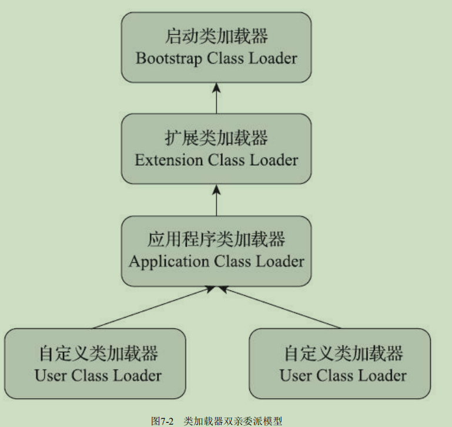image-20201129130856054- 启动类加载器：这个类加载器负责加载存放在
双亲委派模型：如果一个类加载器收到了类加载的请求，它首先不会自己去尝试加载这个类，而是把这个请求委派给父类加载器去完成，每一个层次的类加载器都是如此，因此所有的加载请求最终都应该传送到最顶层的启动类加载器中，只有当父加载器反馈自己无法完成这个加载请求（它的搜索范围中没有找到所需的类）时，子加载器才会尝试自己去完成加载。好处是Java中的类随着它的类加载器一起具备了一种带有优先级的层次关系。
Java模块化系统：
模块的兼容性：JDK 9提出了与“类路径”（ClassPath）相对应的“模块路径”（ModulePath）的概念。简单来说，就是某个类库到底是模块还是传统的JAR包，只取决于它存放在哪种路径上。有如下访问规则：
- JAR文件在类路径的访问规则：所有类路径下的JAR文件及其他资源文件，都被视为自动打包在一个匿名模块（Unnamed Module）里，这个匿名模块几乎是没有任何隔离的，它可以看到和使用类路径上所有的包、JDK系统模块中所有的导出包，以及模块路径上所有模块中导出的包。
- 模块在模块路径的访问规则：模块路径下的具名模块（Named Module）只能访问到它依赖定义中列明依赖的模块和包，匿名模块里所有的内容对具名模块来说都是不可见的，即具名模块看不见传统JAR包的内容。
- JAR文件在模块路径的访问规则：如果把一个传统的、不包含模块定义的JAR文件放置到模块路径中，它就会变成一个自动模块（Automatic Module）。尽管不包含module-info.class，但自动模块将默认依赖于整个模块路径中的所有模块，因此可以访问到所有模块导出的包，自动模块也默认导出自己所有的包。
模块下的类加载器：JDK 9并没有从根本上动摇从JDK 1.2以来运行了二十年之久的三层类加载器架构以及双亲委派模型。但是为了模块化系统的顺利施行，模块化下的类加载器仍然发生了一些应该被注意到变动，主要包括以下几个方面：
- 扩展类加载器被平台类加载器取代
- 平台类加载器和应用程序类加载器都不再派生自java.net.URLClassLoader，现在启动类加载器、平台类加载器、应用程序类加载器全都继承于jdk.internal.loader.BuiltinClassLoader，在BuiltinClassLoader中实现了新的模块化架构下类如从模块中加载的逻辑，以及模块中资源可访问性的处理
- JDK 9中虽然仍然维持着三层类加载器和双亲委派的架构，但类加载的委派关系也发生了变动。当平台及应用程序类加载器收到类加载请求，在委派给父加载器加载前，要先判断该类是否能够归属到某一个系统模块中，如果可以找到这样的归属关系，就要优先委派给负责那个模块的加载器完成加载
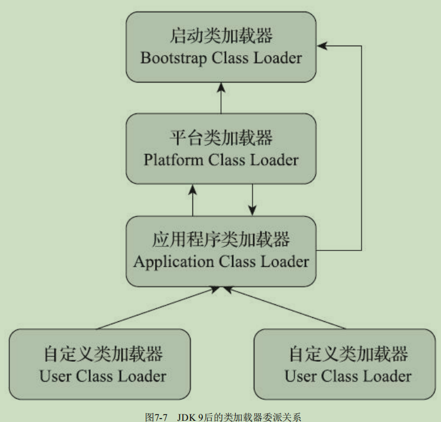image-20201129132525034
第八章 虚拟机字节码执行引擎
运行时栈帧结构：下图是 JVM 的栈和栈帧的总体结构：
每个栈帧里面包含有局部变量表、操作数栈、动态连接、方法返回地址和一些额外的附加信息。
局部变量表：是一组变量值的存储空间，用于存放方法参数和方法内部定义的局部变量。变量槽空间一般是 32 位，对于long类型的变量，需要两个槽来保存。当方法被调用的时候，首先存储相关的实参，然后再存储方法内部的局部变量。比如，对于实例方法，局部变量表第0位代表的就是方法所属对象的引用，方法中通过 this 隐式访问到。另外，局部变量表中的变量槽可以被重用，这可能会带来副作用，如 gc 过程。最后，局部变量没有所谓的“准备阶段”，因此，对局部变量引用前需要先赋值。
操作数栈：用于保存相应的操作数。在进行运算的时候需要检查指令和对应的数据类型是否匹配。在概念模型上，两个不同的栈帧是完全相互独立的，但是在实际过程中，可能存在重合，这样做的好处是节约空间，同时无需进行额外的实参-形参转换。
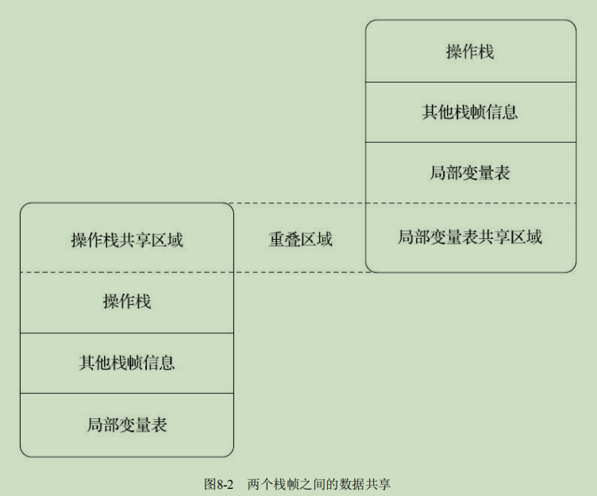image-20201201213604264动态链接：每个栈帧都包含一个指向运行时常量池[1]中该栈帧所属方法的引用，持有这个引用是为了支持方法调用过程中的动态连接（Dynamic Linking）。
方法返回地址：正常返回上层方法调用者，可能会提供返回值，异常返回的话，不带任何返回值。推出的过程实际上等同于将当前栈帧出栈。
方法调用：
解析：在类加载的过程中，如果方法的调用版本在运行期不可变，就可以将方法的符号引用转化为直接引用，该类方法的调用称为解析。在 Java 中，这样的方法有静态方法，私有方法，实例构造器，父类方法，final 方法。这些方法称为“非虚方法”，其他的就成为“虚方法”。
分派（dispatch）：
静态分派：假设
Human man = new Man()，那么Human成为变量的静态类型，或者是外观类型，后面的Man则称为变量的实际类型或者运行时类型。所有依赖静态类型来决定方法执行版本的分派动作，都称为静态分派。静态分派的最典型应用表现就是方法重载。静态分派发生在编译阶段。虽然编译器能够在确定方法重载版本，但是实际上只是选择一个相对更合适的版本。假设有一个类实现了sayHello方法，重载了所有类型的参数。那么对应sayHello('a')中的a的类型被解析为char，如果注释掉char类型的重载，那么a会被解析成int类型，依次往后是：Character，Serializable(Character的一个接口)，Object（父类），变长参数。动态分派：与重写有关。
Human man = new Man()，man执行重写方法的时候，会执行Man类里面的对应的方法，而不是Woman里面的重载方法，这与变量的实际类型有关。调用重写方法的时候，执行指令是invokevirtual，其运行过程如下：- 找到变量指向对象的实际类型，记做C
- 如果在C中找到与方法签名一直的方法，进行访问权限校验，通过直接返回这个方法的直接调用，否则返回
java.lang.IllegalAccessError - 否则，按照继承关系从下往上依次对C的各个父类进行2操作
- 如果始终没有找到合适方法，抛出
java.lang.AbstractMethodError异常
注意，方法存在多态，但是字段不存在多态。
虚拟机动态分派的实现：通常虚拟机会创建一个虚方法表（vtable，对应的还有接口方法表itable），使用虚方法表索引来代替元数据查找以提高性能。
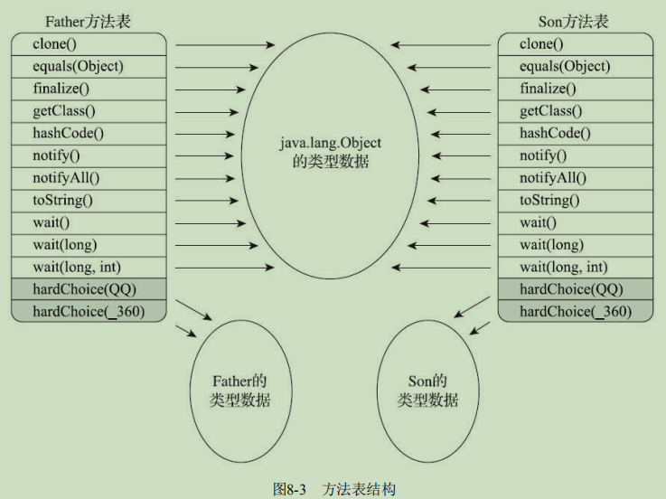image-20201201230836050
动态类型语言支持：
动态类型语言：动态类型语言的关键特征是它的类型检查的主体过程是在运行期而不是编译期进行的，如Javascript等。那相对地，在编译期就进行类型检查过程的语言，譬如C++和Java等就是最常用的静态类型语言。
Java与动态类型：在 Java7 之前的4条方法调用指令（
invoke*）的第一个参数都是被调用方法的符号引用。前面已经提到过，方法的符号引用在编译时产生，而动态类型语言只有在运行期才能确定方法的接收者。这样，在Java虚拟机上实现的动态类型语言就不得不使用“曲线救国”的方式（如编译时留个占位符类型，运行时动态生成字节码实现具体类型到占位符类型的适配）来实现，但这样势必会让动态类型语言实现的复杂度增加，也会带来额外的性能和内存开销。java.lang.invoke：该包提供了一种新的动态确定方法的机制，称为方法句柄。1
2
3
4
5
6
7
8
9
10
11
12
13
14
15
16
17
18
19
20
21
22
23import static java.lang.invoke.MethodHandles.lookup;
import java.lang.invoke.MethodHandle;
import java.lang.invoke.MethodType;
public class MethodHandleTest {
static class ClassA {
public void println(String s) {
System.out.println(s);
}
}
public static void main(String[] args) throws Throwable {
Object obj = System.currentTimeMillis() % 2 == 0 ? System.out : new ClassA();
// 无论obj最终是哪个实现类，下面这句都能正确调用到println方法。
getPrintlnMH(obj).invokeExact("icyfenix");
}
private static MethodHandle getPrintlnMH(Object reveiver) throws Throwable {
// MethodType：代表“方法类型”，包含了方法的返回值（methodType()的第一个参数）和具体参数（methodType()第二个及以后的参数）。
MethodType mt = MethodType.methodType(void.class, String.class);
// lookup()方法来自于MethodHandles.lookup，这句的作用是在指定类中查找符合给定的方法名称、方法类型，并且符合调用权限的方法句柄。
// 因为这里调用的是一个虚方法，按照Java语言的规则，方法第一个参数是隐式的，代表该方法的接收者，也即this指向的对象，这个参数以前是放在参数列表中进行传递，现在提供了bindTo()方法来完成这件事情。
return lookup().findVirtual(reveiver.getClass(), "println", mt).bindTo(reveiver);
}
}MethodHandle在使用方法和效果上与Reflection有众多相似之处。不过，它们也有以下这些区别：
- Reflection和MethodHandle机制本质上都是在模拟方法调用，但是Reflection是在模拟Java代码层次的方法调用，而MethodHandle是在模拟字节码层次的方法调用。
- Reflection中的java.lang.reflect.Method对象远比MethodHandle机制中的java.lang.invoke.MethodHandle对象所包含的信息来得多。
- Reflection API的设计目标是只为Java语言服务的，而MethodHandle则设计为可服务于所有Java虚拟机之上的语言。
invokedynamic指令：作为Java诞生以来唯一一条新加入的字节码指令，都是为了解决原有4条“invoke*”指令方法分派规则完全固化在虚拟机之中的问题，把如何查找目标方法的决定权从虚拟机转嫁到具体用户代码之中。invokedynamic指令的第一个参数不再是代表方法符号引用的CONSTANT_Methodref_info常量，而是变为JDK 7
时新加入的CONSTANT_InvokeDynamic_info常量，从这个新常量中可以得到3项信息：引导方法
（Bootstrap Method，该方法存放在新增的BootstrapMethods属性中）、方法类型（MethodType）和
名称。掌控方法分派规则：子类方法不能直接调用祖父类方法，可以通过MethodHandle来进行访问，如遇到权限问题，可以使用
lookupImpl.setAccessible(true)来解决。
基于栈的字节码解释执行引擎：
解释执行：Java语言被定为解释执行的语言，这在JDK1.0时代算是准确的，但是之后Java也发展出了可以生成本地代码的编译器，这个时候说Java是解释执行的语言就不再准确了。下图中间分支指代解释执行过程，最下面分支指代编译执行过程：
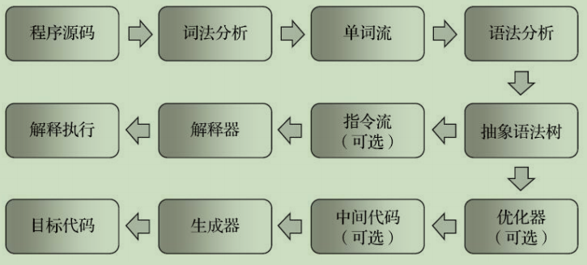image-20201202095616929基于栈的指令集与基于寄存器的指令集：Java指令基于栈结构，x86指令基于寄存器，使用栈结构带来的好处是可移植性更强，缺点是运行速度慢。
第九章 类加载案例
案例分析：
Tomcat：在Tomcat中一种有四种目录存放Java类库：
- 放置在/common目录中。类库可被Tomcat和所有的Web应用程序共同使用。
- 放置在/server目录中。类库可被Tomcat使用，对所有的Web应用程序都不可见。
- 放置在/shared目录中。类库可被所有的Web应用程序共同使用，但对Tomcat自己不可见。
- 放置在/WebApp/WEB-INF目录中。类库仅仅可以被该Web应用程序使用，对Tomcat和其他Web应用程序都不可见。
为了支持这套目录，并且对目录里面的类库进行加载和隔离，Tomcat实现了自定义的类加载器，按照双亲委派模型：
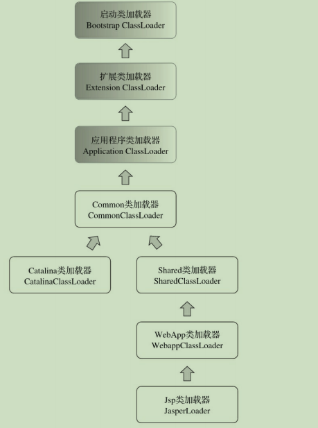image-20201203105110135在Tomcat6之后，只有指定了tomcat/conf/catalina.properties配置文件的server.loader和share.loader项后才会真正建立Catalina类加载器和Shared类加载器的实例，否则会用到这两个类加载器的地方都会用Common类加载器的实例代替。同时前文提到的前三个目录也会被改为一个/lib目录。
OSGi：是OSGi联盟（OSGi Alliance）制订的一个基于Java语言的动态模块化规范。OSGi中的每个模块（Bundle）可以声明它所依赖的Package（通过Import-Package描述），也可以声明它允许导出发布的Package（通过Export-Package描述）。这和后来出现的Java模块化功能重合了。由于模块之间相依依赖的原因，加载器之间的关系不再是双亲委派模型的树形结构，而是已经进一步发展成一种更为复杂的、运行时才能确定的网状结构。在模块中相互依赖会造成死锁。
Backport工具：将高级的Java语法转化为低版本Java也能运行的语句代码的工具。
第十章 前端编译和优化
Java中前端编译一般指将*.java编译为*.class字节码文件的过程，主要有下列过程：
- 准备过程：初始化插入式注解处理器
- 解析与填充符号表过程：词法，语法分析，填充符号表
- 插入式注解处理器的注解处理过程：插入式注解处理器的执行阶段
- 分析与字节码生成过程：标注检查，解语法糖，字节码生成
解析与填充符号表：
- 词法语法分析：词法分析用于生成标记（token）集合的过程，语法分析则是根据标记序列构造抽象语法树的过程。
- 填充符号表：符号表（Symbol Table）是由一组符号地址和符号信息构成的数据结构，符号表中所登记的信息在编译的不同阶段都要被用到，如类型检查等。
注解处理器：可以把插入式注解处理器看作是一组编译器的插件，当这些插件工作时，允许读取、修改、添加抽象语法树中的任意元素。如果这些插件在处理注解期间对语法树进行过修改，编译器将回到解析及填充符号表的过程重新处理，直到所有插入式注解处理器都没有再对语法树进行修改为止，每一次循环过程称为一个轮次（Round）。
语义分析和字节码生成：
- 标注检查：变量使用前是否已被声明、变量与赋值之间的数据类型是否能够匹配，等等，在该过程中顺便执行常量折叠优化。
- 数据及控制流分析：是对程序上下文逻辑更进一步的验证，它可以检查出诸如程序局部变量在使用前是否有赋值、方法的每条路径是否都有返回值、是否所有的受查异常都被正确处理了等问题。final修饰的变量不可变就是在这一阶段完成的。
- 解语法糖：将一些语法糖进行还原，Java中常见语法糖有泛型，变长参数，自动装箱拆箱等。
- 字节码生成：把前面各个步骤所生成的信息（语法树、符号表）转化成字节码指令写到磁盘中，编译器还进行了少量的代码添加和转换工作。例如前文多次登场的实例构造器
<init>()方法和类构造器<clinit>()方法就是在这个阶段被添加到语法树之中的。实例构造器并不等同于默认构造函数。<init>()和<clinit>()这两个构造器的产生实际上是一种代码收敛的过程，编译器会把语句块（对于实例构造器而言是“{}”块，对于类构造器是“static{}”块）、变量初始化（实例变量和类变量）、调用父类的实例构造器（仅仅是实例构造器，<clinit>()方法中无须调用父类的<clinit>()方法，Java虚拟机会自动保证父类构造器的正确执行，但在<clinit>()方法中经常会生成调用java.lang.Object的<init>()方法的代码）等操作收敛到<init>()和<clinit>()方法之中。
Java语法糖：
泛型：Java选择的泛型实现方式是类型擦除式泛型，而C#选择的泛型实现方式是具现化式泛型。由于采用的是类型擦出式泛型，以下操作不合法：
1
2
3
4
5
6
7
8
9public class TypeErasureGenerics<E> {
public void doSomething(Object item) {
if (item instanceof E) { // 不合法，无法对泛型进行实例判断
...
}
E newItem = new E(); // 不合法，无法使用泛型创建对象
E[] itemArray = new E[10]; // 不合法，无法使用泛型创建数组
}
}java中的泛型只在程序源码中存在，在编译后的字节码文件中，全部泛型都被替换为原来的裸类型（Raw Type）了，并且在相应的地方插入了强制转型代码，因此对于运行期的Java语言来说，
ArrayList<int>与ArrayList<String>其实是同一个类型。当初Java选择这种方式实现泛型的历史原因在于Java语言的向后兼容性。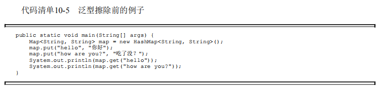image-20201205130631950将这段Java代码编译成Class文件，然后再使用反编译工具：
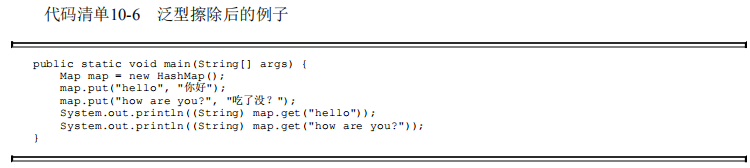image-20201205130714474由于类型擦除，导致的问题有：不支持原始类型的泛型，运行期无法取到泛型类型信息。
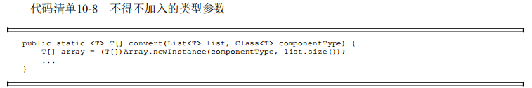image-20201205131020421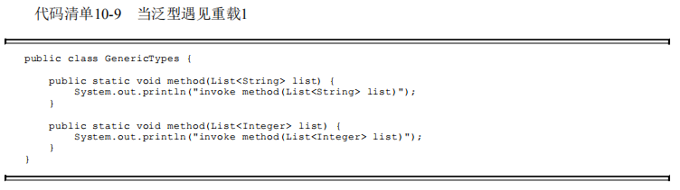image-20201205131111259上述代码不能被编译，相反下列代码可以被编译，因为方法签名不同：
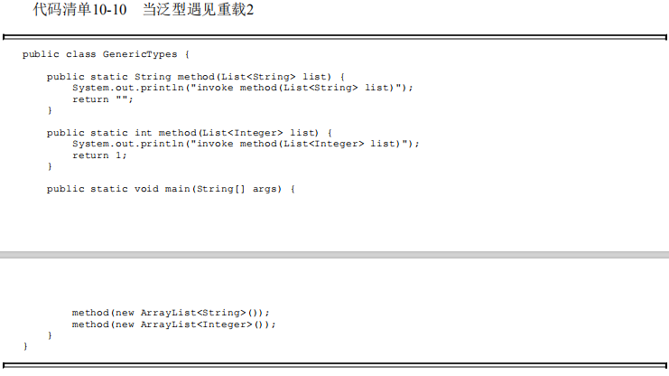image-20201205131152443自动装箱，拆箱与遍历循环：
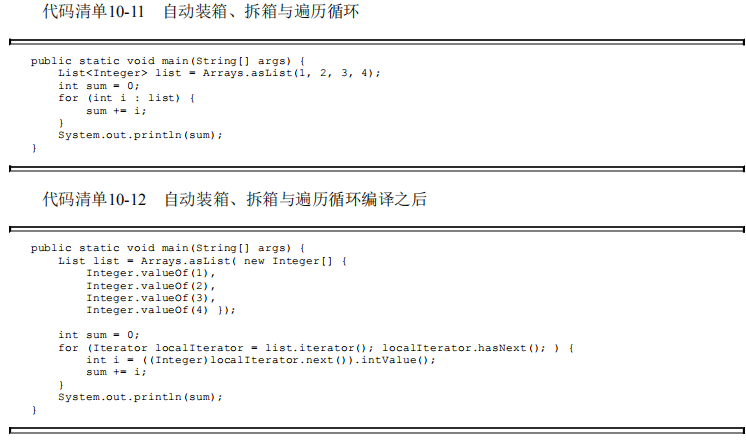image-20201205131228596遍历循环的类需要实现Iterable接口的原因从上图可以看出。
条件编译：java语言没有预处理器，但是可以实现条件编译，使用
if(true)等。
第十一章 后端编译和优化
即时（JIT）编译器：在运行时，虚拟机将会把热点代码编译成本地机器码，并以各种手段尽可能地进行代码优化，运行时完成这个任务的后端编译器被称为即时编译器。
解释器和编译器：解释器与编译器两者各有优势：当程序需要迅速启动和执行的时候，解释器可以首先发挥作用，省去编译的时间，立即运行。当程序启动后，随着时间的推移，编译器逐渐发挥作用，把越来越多的代码编译成本地代码，这样可以减少解释器的中间损耗，获得更高的执行效率。在Java中，解释器和编译器是相互协作的：
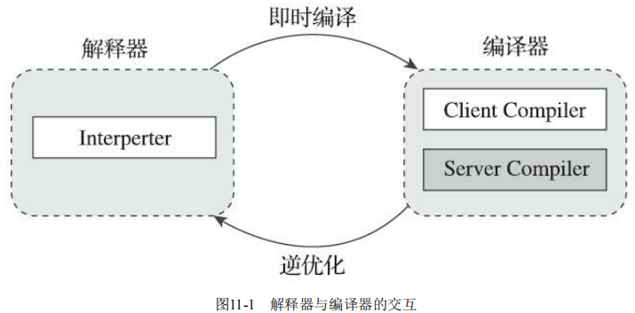image-20201205155102424为了使程序启动响应速度与运行效率之间达到最佳平衡，HotSpot虚拟机在编译子系统中加入了分层编译的功能。
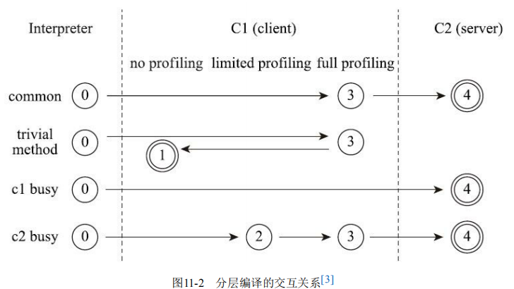image-20201205155331944编译对象与触发条件：热点代码指的是被多次调用的方法，或者是多次执行的循环体。发现对应的热点代码后，编译的目标对象都是整个方法体。为了判断某段代码是不是热点代码，可以使用基于采样的热点探测和基于计数器的热点探测。HotSpot使用的是后者，为了实现热点计数，需要两类计数器：方法调用计数器和回边计数器。一旦超过阈值，就会触发即时编译。
编译过程：在编译请求产生时，虚拟机在编译器还未完成编译之前，都仍然将按照解释方式继续执行代码，而编译动作则在后台的编译线程中进行。下图是编译器的全过程示意图：
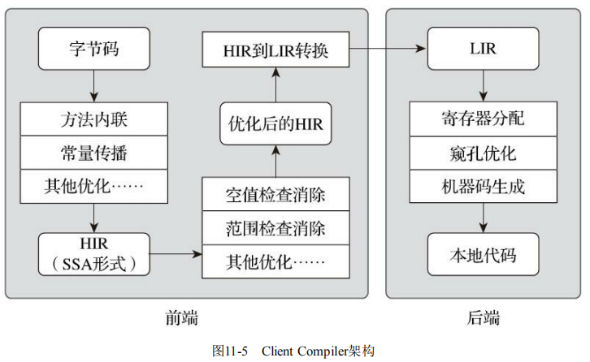image-20201205155947036
提前编译器：目前提前编译有两条路径：一条分支是做与传统C、C++编译器类似的，在程序运行之前把程序代码编译成机器码的静态翻译工作；另外一条分支是把原本即时编译器在运行时要做的编译工作提前做好并保存下来，下次运行到这些代码（譬如公共库代码在被同一台机器其他Java进程使用）时直接把它加载进来使用。第一条路径直指Java中的即时编译的最大弱点：即时编译需要占用程序的运行时间和运算资源。第二条路径本质上是给即时编译器做缓存加速，可以成为动态提前编译（Dynamic AOT）。即时编译器的优点在：性能分析制导优化，激进预测性优化和链接时优化。Java中的提前编译器有Jaotc。
编译器优化技术：
- 方法内联：是其他优化的基础，减少方法分派的开销
- 逃逸分析：分析对象动态作用域，当一个对象在方法里面被定义后，它可能被外部方法所引用，例如作为调用参数传递到其他方法中，这种称为方法逃逸；甚至还有可能被外部线程访问到，譬如赋值给可以在其他线程中访问的实例变量，这种称为线程逃逸；从不逃逸、方法逃逸到线程逃逸，称为对象由低到高的不同逃逸程度。根据不同逃逸程度：可以执行栈上分配，标量替换，同步消除。
- 公共子表达式消除
- 数组边界检查消除
第十二章 Java内存模型与线程
硬件的效率与一致性：由于处理器的运行速度远高于IO的速度，为此引入了高速缓存，但是引入高速缓存又造成了缓存一致性的问题。由此产生一致性协议：MSI，MESI，MOSI等。
Java内存模型：
主内存与工作内存：规定了所有的变量都存储在主内存（Main Memory）中，每条线程还有自己的工作内存（Working Memory，可与前面讲的处理器高速缓存类比），线程的工作内存中保存了被该线程使用的变量的主内存副本，线程对变量的所有操作（读取、赋值等）都必须在工作内存中进行，而不能直接读写主内存中的数据。
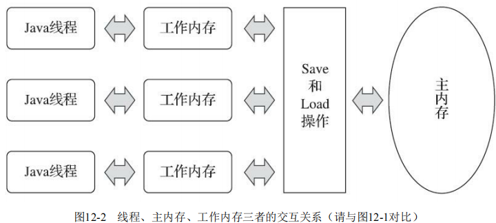image-20201205185323393内存间交互操作：lock，unlock，read，load，store，write，use，assign。伤处操作都是原子的，不可再分的。
对于volatile型变量的特殊规则：当一个变量被volatile定义的时候，将具有：
- 保证此变量对所有线程的可见性，这里的“可见性”是指当一条线程修改了这个变量的值，新值对于其他线程来说是可以立即得知的。
- 禁止指令重排序优化，普通的变量仅会保证在该方法的执行过程中所有依赖赋值结果的地方都能获取到正确的结果，而不能保证变量赋值操作的顺序与程序代码中的执行顺序一致。
针对long和double型变量的特殊规则：允许虚拟机将没有被volatile修饰的64位数据的读写操作划分为两次32位的操作来进行，即允许虚拟机实现自行选择是否要保证64位数据类型的load、store、read和write这四个操作的原子性。
原子性，可见性与有序性：由Java内存模型来直接保证的原子性变量操作包括read、load、assign、use、store和write这六个；可见性就是指当一个线程修改了共享变量的值时，其他线程能够立即得知这个修改；如果在本线程内观察，所有的操作都是有序的；如果在一个线程中观察另一个线程，所有的操作都是无序的。
先行发生原则：
- 程序次序规则：在一个线程内，按照控制流顺序，书写在前面的操作先行发生于书写在后面的操作，是控制流顺序。
- 管程锁定规则：一个unlock操作先行发生于后面对同一个锁的lock操作。
- volatile变量规则：对一个volatile变量的写操作先行发生于后面对这个变量的读操作。
- 线程启动规则：Thread对象的start()方法先行发生于此线程的每一个动作。
- 线程终止规则：线程中的所有操作都先行发生于对此线程的终止检测，我们可以通过Thread::join()方法是否结束、Thread::isAlive()的返回值等手段检测线程是否已经终止执行。
- 线程中断规则：对线程interrupt()方法的调用先行发生于被中断线程的代码检测到中断事件的发生，可以通过Thread::interrupted()方法检测到是否有中断发生。
- 对象终结规则：一个对象的初始化完成（构造函数执行结束）先行发生于它的finalize()方法的开始。
- 传递性：如果操作A先行发生于操作B，操作B先行发生于操作C，那就可以得出操作A先行发生于操作C的结论。
Java与线程：
线程的实现：内核线程实现，用户线程实现，混合实现。
Java线程调度：
- 协同式线程调度：线程的执行时间由线程本身来控制，线程把自己的工作执行完了之后，要主动通知系统切换到另外一个线程上去。
- 抢占式线程：每个线程将由系统来分配执行时间，线程的切换不由线程本身来决定。
Java线程调度是由系统自动完成的，但是可以为不同的线程分配不同的优先级，来建议操作系统多分配一些时间在优先级高的线程上。
状态转换：Java中定义了6种线程状态：
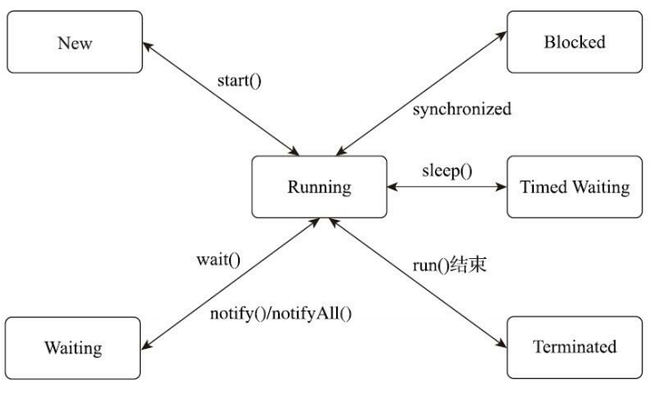image-20201205194306856
Java与协程：
- 内核线程的局限：天然的缺陷是切换、调度成本高昂，系统能容纳的线程数量也很有限。
- 协程的复苏：由于最初多数的用户线程是被设计成协同式调度的，所以它有了一个别名——“协程”（Coroutine）。又由于这时候的协程会完整地做调用栈的保护、恢复工作，所以今天也被称为“有栈协程”。协程的主要优势是轻量，缺点是需要在应用层面实现的内容（调用栈、调度器这些）特别多。
- Java的解决方案：纤程（fiber），一种轻量的线程，使用JVM调度，而不是操作系统。
第十三章 线程安全与锁优化
线程安全：当多个线程同时访问一个对象时，如果不用考虑这些线程在运行时环境下的调度和交替执行，也不需要进行额外的同步，或者在调用方进行任何其他的协调操作，调用这个对象的行为都可以获得正确的结果，那就称这个对象是线程安全的。
- Java语言中的线程安全：
- 不可变：不可变的对象一定是线程安全，无论是对象的方法实现还是方法的调用者，都不需要再进行任何线程安全保障措施。基本类型数据使用final关键字修饰可以保证不可变，如果想要保证对象不可变，需要将对象的字段设置为final才可以。
- 绝对线程安全：不管运行时环境如何，调用者都不需要任何额外的同步措施。
- 相对线程安全：通常意义上所讲的线程安全，它需要保证对这个对象单次的操作是线程安全的，我们在调用的时候不需要进行额外的保障措施，但是对于一些特定顺序的连续调用，就可能需要在调用端使用额外的同步手段来保证调用的正确性。在Java语言中，大部分声称线程安全的类都属于这种类型，例如Vector。
- 线程兼容：指对象本身并不是线程安全的，但是可以通过在调用端正确地使用同步手段来保证对象在并发环境中可以安全地使用。我们平常说一个类不是线程安全的，通常就是指这种情况。Java中的ArrayList就是这种情况。
- 线程对立：是指不管调用端是否采取了同步措施，都无法在多线程环境中并发使用代码。
- 线程安全的方法实现：
- 互斥同步：临界区（Critical Section）、互斥量（Mutex）和信号量（Semaphore）都是常见的互斥实现方式。在Java里面，互斥同步手段是synchronized关键字，这是一种块结构的同步语法。该关键字经过编译之后，会产生monitorenter和monitorexit这两个字节码指令。这两个字节码指令都需要一个reference类型的参数来指明要锁定和解锁的对象。如果Java源码中的synchronized明确指定了对象参数，那就以这个对象的引用作为reference；如果没有明确指定，那将根据synchronized修饰的方法类型（如实例方法或类方法），来决定是取代码所在的对象实例还是取类型对应的Class对象来作为线程要持有的锁。另外的话也有重入锁（ReentrantLock），相较于synchronized，重入锁提供：等待可中断，公平锁，锁绑定多个条件。
- 非阻塞同步：互斥同步面临的主要问题是进行线程阻塞和唤醒所带来的性能开销，因此这种同步也被称为阻塞同步。基于冲突检测的乐观并发策略，通俗地说就是不管风险，先进行操作，如果没有其他线程争用共享数据，那操作就直接成功了；如果共享的数据的确被争用，产生了冲突，那再进行其他的补偿措施，最常用的补偿措施是不断地重试，直到出现没有竞争的共享数据为止。这种乐观并发策略的实现不再需要把线程阻塞挂起，因此这种同步操作被称为非阻塞同步。这种方法需要硬件支持，因为我们必须要求操作和冲突检测这两个步骤具备原子性。如测试并设置（Test-and-Set）；获取并增加（Fetch-and-Increment）；交换（Swap）；比较并交换（Compare-and-Swap，下文称CAS）。
- 无同步方案：如果能让一个方法本来就不涉及共享数据，那它自然就不需要任何同步措施去保证其正确性，因此会有一些代码天生就是线程安全的。
锁优化：
自旋锁与自适应自旋：互斥同步对性能最大的影响是阻塞的实现，挂起线程和恢复线程的操作都需要转入内核态中完成，这些操作给Java虚拟机的并发性能带来了很大的压力。如果物理机器有一个以上的处理器或者处理器核心，能让两个或以上的线程同时并行执行，我们就可以让后面请求锁的那个线程“稍等一会”，但不放弃处理器的执行时间，看看持有锁的线程是否很快就会释放锁。为了让线程等待，我们只须让线程执行一个忙循环（自旋），这项技术就是所谓的自旋锁。自适应意味着自旋的时间不再是固定的了，而是由前一次在同一个锁上的自旋时间及锁的拥有者的状态来决定的。
锁消除：锁消除是指虚拟机即时编译器在运行时，对一些代码要求同步，但是对被检测到不可能存在共享数据竞争的锁进行消除。锁消除的主要判定依据来源于逃逸分析的数据支持，如果判断到一段代码中，在堆上的所有数据都不会逃逸出去被其他线程访问到，那就可以把它们当作栈上数据对待，认为它们是线程私有的，同步加锁自然就无须再进行。
锁粗化：原则上，总是推荐将同步块的作用范围限制得尽量小，这样是为了使得需要同步的操作数量尽可能变少，即使存在锁竞争，等待锁的线程也能尽可能快地拿到锁。但是如果一系列的连续操作都对同一个对象反复加锁和解锁，甚至加锁操作是出现在循环体之中的，那即使没有线程竞争，频繁地进行互斥同步操作也会导致不必要的性能损耗。因此可以进行锁粗化操作。
轻量级锁：HotSpot虚拟机对象头布局：
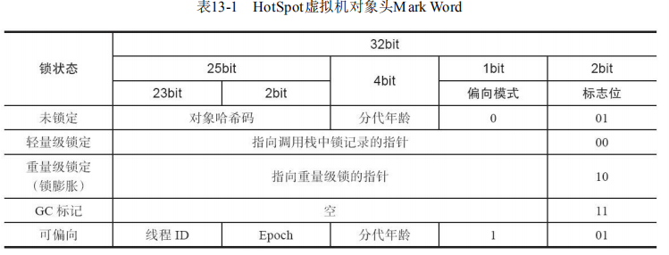image-20201206125352406在代码即将进入同步块的时候，如果此同步对象没有被锁定（锁标志位为“01”状态），虚拟机首先将在当前线程的栈帧中建立一个名为锁记录（Lock Record）的空间，用于存储锁对象目前的Mark Word的拷贝：
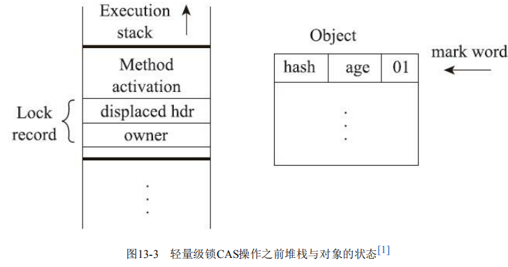image-20201206125505870然后，虚拟机将使用CAS操作尝试把对象的Mark Word更新为指向Lock Record的指针。如果这个更新动作成功了，即代表该线程拥有了这个对象的锁，并且对象Mark Word的锁标志位将转变为“00”，表示此对象处于轻量级锁定状态。
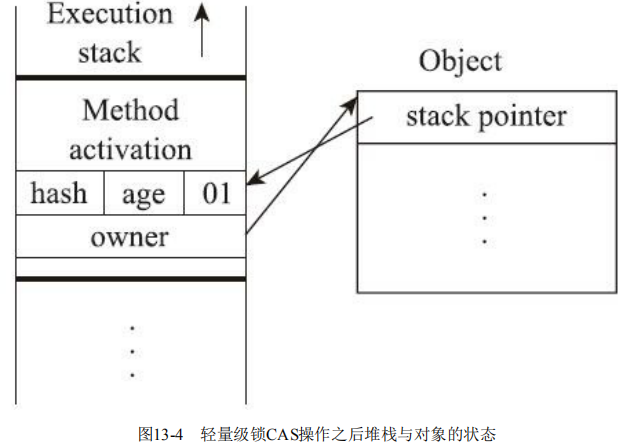image-20201206125621073偏向锁：它的目的是消除数据在无竞争情况下的同步原语，进一步提高程序的运行性能。如果说轻量级锁是在无竞争的情况下使用CAS操作去消除同步使用的互斥量，那偏向锁就是在无竞争的情况下把整个同步都消除掉，连CAS操作都不去做了。偏向锁会偏向于第一个获得它的线程，如果在接下来的执行过程中，该锁一直没有被其他的线程获取，则持有偏向锁的线程将永远不需要再进行同步。
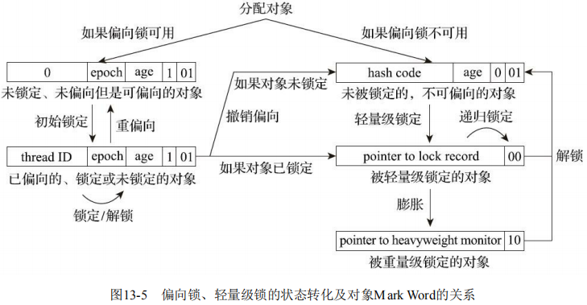image-20201206125818939在Java语言里面一个对象如果计算过哈希码，就应该一直保持该值不变，否则很多依赖对象哈希码的API都可能存
在出错风险。因此，当一个对象已经计算过一致性哈希码后，它就再也无法进入偏向锁状态了；而当一个对象当前正处于偏向锁状态，又收到需要计算其一致性哈希码请求时，它的偏向状态会被立即撤销，并且锁会膨胀为重量级锁。